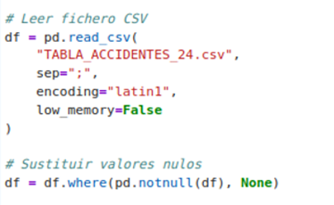

Ejercicio resuelto 2: Conversión de un fichero CSV a formato Parquet
Conversión y almacenamiento de datos mediante Apache Parquet
Introducción al ejercicio
En este ejercicio se propone convertir el conjunto de datos TABLA_ACCIDENTES_24.csv al formato Apache Parquet, uno de los formatos de almacenamiento columnar más utilizados en entornos Big Data.
Para realizar esta transformación se emplea la biblioteca Pandas para cargar el fichero CSV y la biblioteca PyArrow para generar el fichero Parquet aplicando compresión Snappy.
A diferencia del formato Apache Avro, que organiza los registros principalmente siguiendo una estructura orientada a filas, Parquet utiliza un modelo de almacenamiento orientado a columnas. Esta característica resulta especialmente adecuada para las consultas analíticas realizadas sobre grandes volúmenes de información.
El ejercicio permitirá al estudiante comprobar de forma práctica cómo un conjunto de datos inicialmente almacenado en formato CSV puede transformarse en un formato optimizado para su utilización dentro del ecosistema Hadoop.
Objetivo del ejercicio
El objetivo principal consiste en transformar el fichero TABLA_ACCIDENTES_24.csv en un fichero TABLA_ACCIDENTES_24.parquet, utilizando Pandas y PyArrow.
- Cargar el conjunto de datos CSV mediante Pandas.
- Preparar los datos para su transformación.
- Generar un fichero en formato Apache Parquet.
- Aplicar compresión Snappy.
- Comprobar que los datos se han convertido correctamente.
- Analizar las características del almacenamiento columnar.
1. Lectura del fichero CSV
El primer paso consiste en cargar el fichero TABLA_ACCIDENTES_24.csv utilizando la biblioteca Pandas.
En este caso se especifica el carácter utilizado como separador de los campos, así como la codificación Latin-1, necesaria para interpretar correctamente los caracteres presentes en el conjunto de datos.

Figura 41. Lectura del fichero TABLA_ACCIDENTES_24.csv mediante Pandas. Fuente: elaboración propia.
# Leer fichero CSV
df = pd.read_csv(
"TABLA_ACCIDENTES_24.csv",
sep=";",
encoding="latin1",
low_memory=False
)
# Sustituir valores nulos
df = df.where(pd.notnull(df), None)
La función read_csv() permite cargar el contenido del
fichero en un DataFrame de Pandas, facilitando
posteriormente su tratamiento y conversión.
Asimismo, se realiza un tratamiento de los valores nulos mediante
pd.notnull(), sustituyéndolos por
None. Esta preparación permite evitar problemas durante
la posterior serialización de los datos.
2. Preparación de los datos
Una vez cargado el fichero CSV, los datos se encuentran disponibles en el DataFrame df. Antes de generar el fichero Parquet es necesario comprobar que los registros y tipos de datos se encuentran correctamente preparados.
Esta etapa es especialmente importante cuando se trabaja con conjuntos de datos procedentes de ficheros CSV, ya que este formato no almacena información explícita sobre los tipos de datos de cada columna.
3. Conversión del CSV a formato Parquet
Una vez preparado el DataFrame, se procede a generar el fichero Parquet mediante la biblioteca PyArrow.
Para ello se utiliza el método to_parquet(), indicando
el nombre del fichero de salida y la utilización del algoritmo de
compresión Snappy.
# Conversión a formato Parquet
df.to_parquet(
"TABLA_ACCIDENTES_24.parquet",
engine="pyarrow",
compression="snappy",
index=False
)
El parámetro engine="pyarrow" indica que será PyArrow
el encargado de realizar la escritura del fichero Parquet.
Por su parte, compression="snappy" permite aplicar
compresión a los datos, reduciendo el espacio necesario para su
almacenamiento sin modificar la información contenida en el
conjunto de datos.
Finalmente, index=False evita que el índice interno del
DataFrame de Pandas se almacene como una columna adicional dentro
del fichero.
4. Comprobación del fichero generado
Una vez finalizada la conversión, se comprueba que el fichero TABLA_ACCIDENTES_24.parquet se ha generado correctamente.
import os
os.path.getsize("TABLA_ACCIDENTES_24.parquet")Esta comprobación permite conocer el tamaño que ocupa el fichero Parquet generado y posteriormente compararlo con el tamaño del fichero CSV original.
5. Lectura del fichero Parquet
Para verificar que la conversión se ha realizado correctamente, el fichero Parquet puede volver a cargarse utilizando Pandas.
# Leer el fichero Parquet
df_parquet = pd.read_parquet(
"TABLA_ACCIDENTES_24.parquet",
engine="pyarrow"
)
# Mostrar los primeros registros
df_parquet.head()De esta manera se comprueba que los registros originales permanecen disponibles después de realizar la conversión al nuevo formato.
6. Comparación entre CSV y Parquet
Una de las finalidades del ejercicio es que el estudiante pueda comprender las diferencias existentes entre un formato de texto como CSV y un formato columnar como Parquet.
| Característica | CSV | Parquet |
|---|---|---|
| Organización | Orientado a filas | Orientado a columnas |
| Tipos de datos | No definidos explícitamente | Almacenados en el esquema |
| Compresión | No aplicada directamente | Permite compresión, como Snappy |
| Consultas analíticas | Menor eficiencia | Optimizado para consultas analíticas |
| Uso en Big Data | Formato de intercambio | Almacenamiento analítico optimizado |
Resultado del ejercicio
Como resultado del proceso se obtiene el fichero TABLA_ACCIDENTES_24.parquet, generado a partir del conjunto de datos original en formato CSV.
El fichero utiliza el formato columnar Apache Parquet y compresión Snappy, proporcionando una estructura adecuada para su utilización posterior en procesos de análisis y procesamiento distribuido dentro del ecosistema Hadoop.
Conclusión
La realización de este ejercicio permite al estudiante comprobar de forma práctica el proceso de transformación de un conjunto de datos CSV a un formato optimizado para entornos Big Data.
Apache Parquet proporciona un almacenamiento orientado a columnas que, junto con mecanismos de compresión como Snappy, permite reducir el espacio ocupado y mejorar el rendimiento de determinadas operaciones analíticas. Estas características hacen que Parquet sea especialmente adecuado para su utilización junto con herramientas del ecosistema Hadoop.